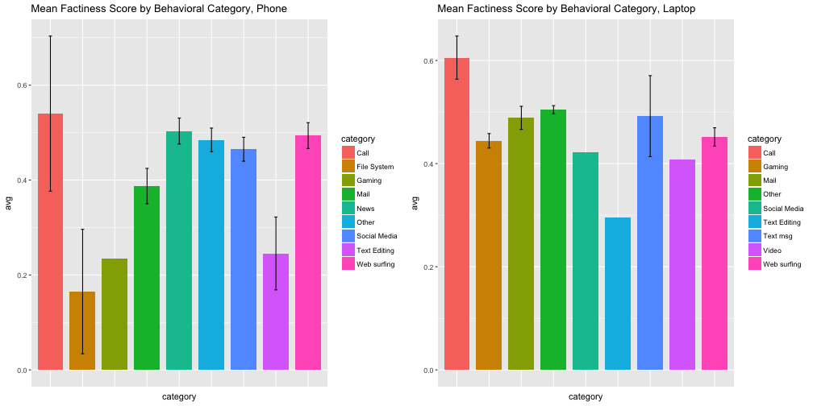

- 1. Database and machine learning
- 2. Computational journalism
Trustworthiness of Information across Information Domains
The "Factiness" of Information
MJ Cho
Cyber Social Mini Conference
Information Trustworthiness
Cyber Social Project
- 1. Consumer-side, moment-by-moment
Factiness
- 1. Duke's ClaimBuster API
Factiness by Behavioral Categories

Topic Modeling and Trend of the Mean Factiness Score: Phone

Topic Modeling and Trend of the Mean Factiness Score: Laptop